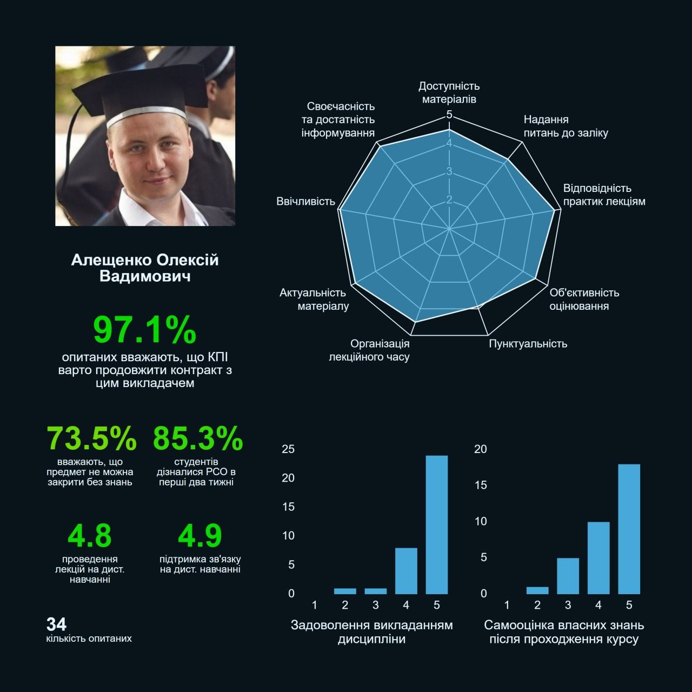
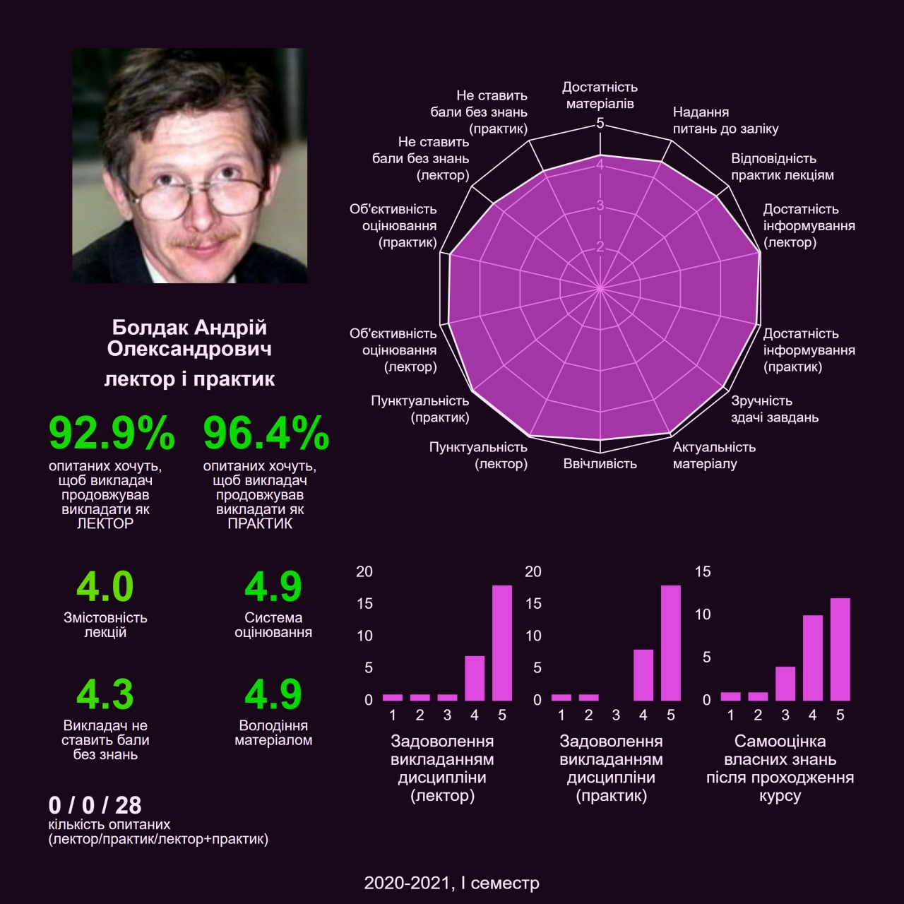
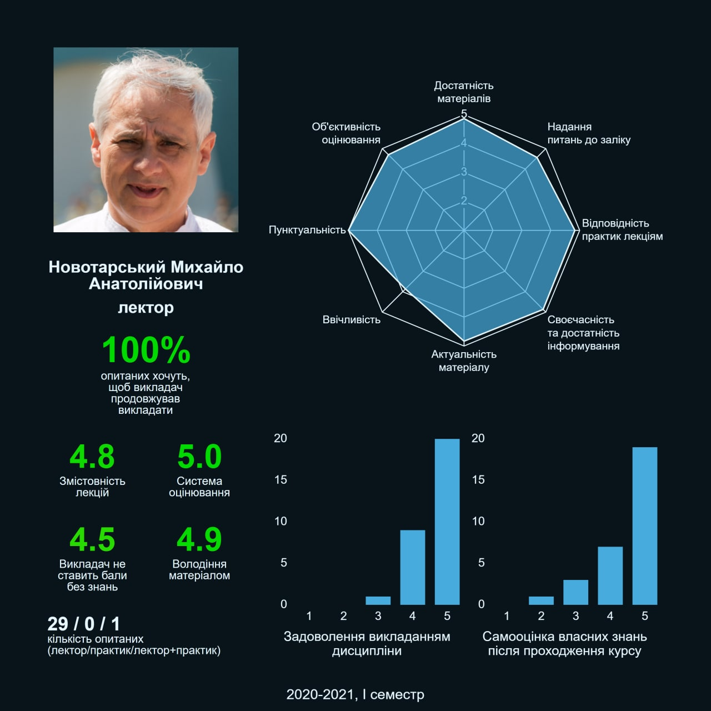
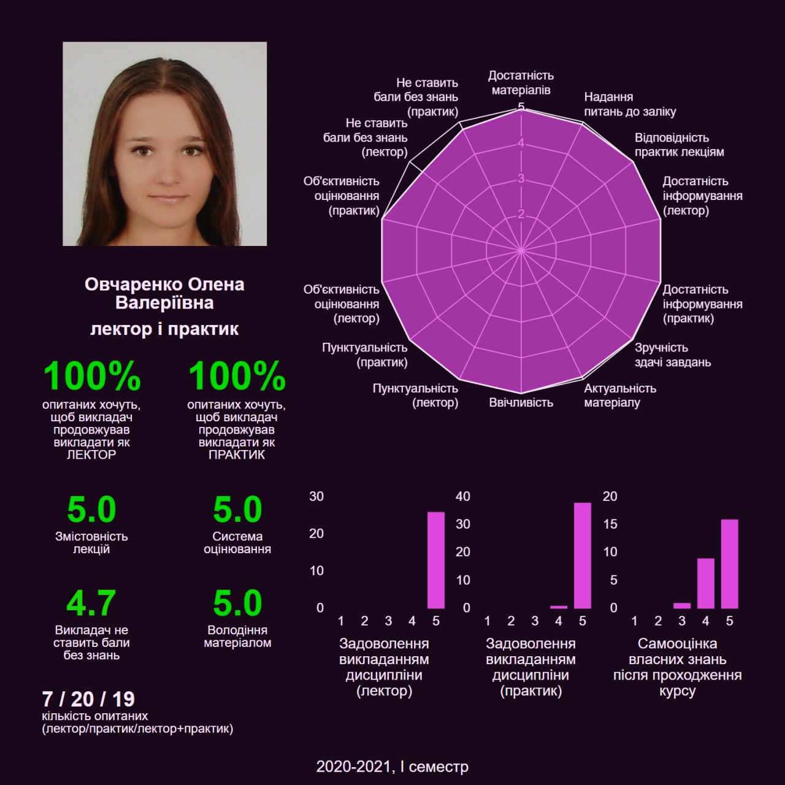
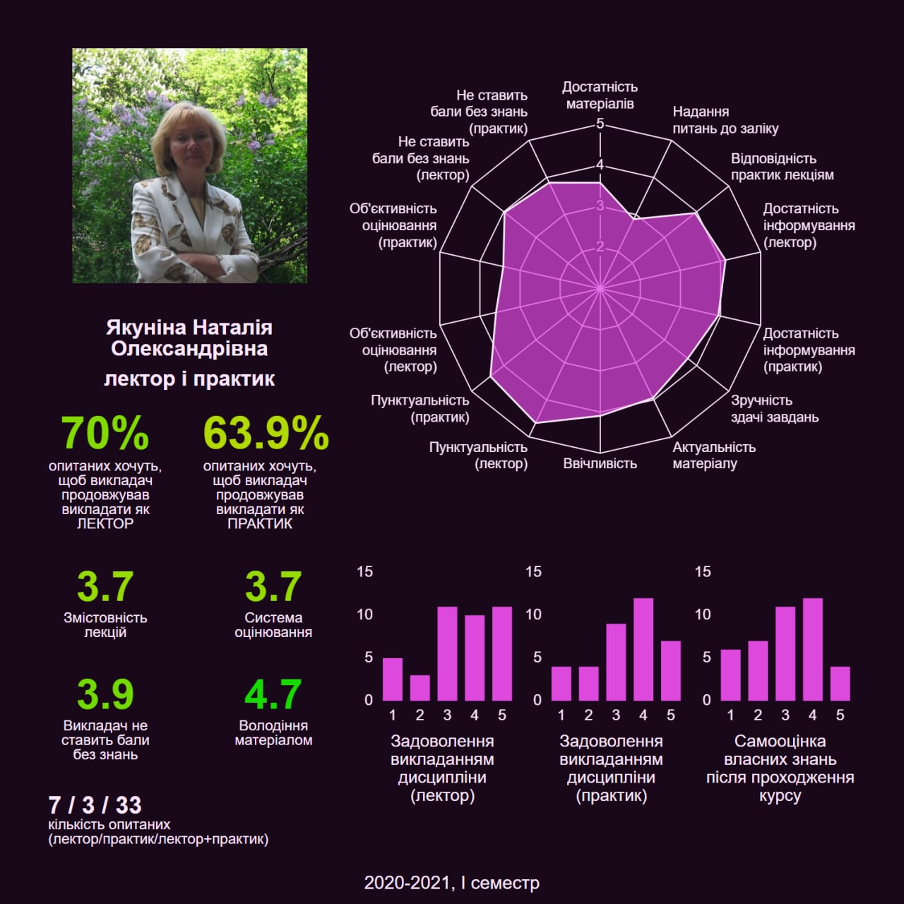

Алещенко Олексій Вадимович

Відгук з СОВА:
Дуже добрий і світлий викладач, не дивлячись на невеликі недоліки, і невимогливість відмінно і понятливо дає матеріал, лекції дуже жваві, в них немає води, величезна кількість практичних прикладів. Так само викладач вимагає зворотний зв'язок від аудиторії, що додає інтерес до лекцій.
ООП:
Якщо вам повезе, то він буде приймати у вас лаби, якщо ні - то асистент, якого ми бачили 1 раз за семестр, потім він прийняв лаби онлайн за 1 раз (просто ок або не ок). Алещенко - напевне найкращий препод 2 семестру. Дуже лояльний до студентів викладач. Лаби будете писати на Java. Він створить вам чат в телеграмі, де буде відповідати на всі питання. На лекціях розповідає цікаві речі, може пожартувати. Завжди відповідає на питання. Він ставить усім автомати (ну майже, але ті, хто хоче 95-100 отримували якесь легке теоретичне питання, яке можливо було загуглити). З цього предмету у вас буде екзамен, якщо здали всі лаби вчасно, можна поставити його ще до сесії. Шикарна людина, навіть просто побалакати з ним вже круто, слухає студентів, любить викладати, просто душка. Настільки крутий, що ми приходили до нього на лабки, і, поки очікували чергу, грали у слова ну і всіляке таке. До того ж, знає, що палєво існує, каже, що треба ж на щось подивитися, щоб зробити самому. Буде 8 лаб, які потрібно писати на Java, але нам дозволяли 1-7 робити на Python. Потім за кількістю лаб ставили оцінку. Здав 8 лаб - отримуєш 90-100, здав 7 лаб - отримуєш 75-85. Були випадки коли здавали 7 лаб отримували 80 балів, потім брали додаткове питання і отримували 85+.
Болдак Андрій Олександрович

Відгук з "СОВА":
Один з улюблених викладачів. Звичайно, може розповісти на лекціях історію або трохи відволіктися, але це не заважає предмету, а скоріше навпаки більше привертає увагу студентів, викладач цим не зловживає. ДУЖЕ актуальний матеріал, розбирається в сучасних технологіях. Завжди можна запитати рада або допомога, та й просто приємна людина.
ОБД:
Золотий викладач, лекції в нього цікаві, любить поговорити на різні теми, знає свій предмет. Він досі пише реальні проекти, тому в курсі усіх нових технологій, на що з ним можна поговорити «по душам». БД буде на MySQL. Упродовж семестру всі будуть робити проект (в основному багато треба буде повозитися з документацією, юзкейсами, юмл діаграмами). Команди будуть по 5-6 людей, всі повинні щось робити (насправді все робить 2-3 людей з команди). Вкінці семестру приходите, показуєте роботу та отримуєте 80-100 за залік. Щоб підвищіти оцінку – можна здати якийсь sql-запит та отримати + бали. Не забивайте на БД, бо без цього нікуди.
ІПЗ-2:
Упродовж семестру будете робити свій проект (як я зараз роблю ). Обираєте тему, набираєте собі команду і вперед і з піснею! Можна допомагати викладачу з готовими проектами та заробити оцінку, або зробити щось своє. Можна працювати в команді з 1-4 людей, однак якщо людей багато, то і проект повинен бути масштабним. Також протягом семестру можна зробити доповідь на лекції (по суті провести лекцію) на якусь цікаву тему зі списку тем та отримати +40 балів. Загалом, в теорії можна отримати 160 балів, якщо здати проект та доповідь. Предмет цікавий, як мінімум, тому що дозволяє займатися цікавим проектом, робити щось нове і розвиватися, а не здавати як на деяких предметах - здаєш нецікаві Лаби, які були актуальні років 20 назад і сумуєш від того, що витрачаєш на цей час. Не лінуйтеся і розвивайтеся, цей предмет і викладач цьому посприяє! Ви завжди можете написати викладачеві в Телеграма та задати будь-яке питання, він вам відповість і допоможе.
Новотарський Михайло Анатолійович

Відгук з "СОВА":
Сучасний, гарний викладач. Дистанційний формат настроєний вдало, експериментував з платформами і завжди має варіант у запасі (якщо впадуть ресурси кафедри наприклад). РСО дотримується. Не дивлячись на бубніння і місцями негатив, іде назустріч студентам. Ділиться власним досвідом, як з дисципліни, так і просто. У предметі розбирається добре, лекції дуже змістовні і докладні. Негативним моментом є іноді занадто сурове ставлення до студентів.
Програмування на Python, ДМ, АМО:
Новотарський Михайло Анатолійович веде програмування на мові Python. Лекції конспектувати не треба, бо він викладає їх на своєму сайті, де є і рейтинг, оцінки за лаби і контрольні. Сайт: amodm.pp.ua, пароль від нього він дасть на 1 лекції. Інколи слухати його нудно, але лекції – це імба. До його честі, один з небагатьох викладачів з прозорою системою балів: окрім того що дотримується 100-бальної, у нього можна у лайврежимі відстежити свою успішність. Він навчить вас жити у «демократичні країні Пайтон і плавати у безмежному морі інформації». Його ви точно запам’ятаєте. Кожні 3-4 лекції на початку пари він проводить тест на 10 питан (5 балів за тест), в тесті як теорія так і практика по лекціям, якщо читати лекції – 3-5 балів можна спокійно забирати на кожному тесті. Здавати лаби, якщо ви написали їх самі – дуже легко, але якщо знайде сходство з іншими лабами – максимум 1-2 бали за лабу. Тест в кінці семестру теж, в принципі, не дуже складно написати, якщо за день до тесту уважно перечитати усі лекції. Якщо вчитися – 75+ балів у вас в кармані.
Овчаренко Олена Валеріївна

Відгук з "СОВА":
Овчаренко Олена Валеріївна дуже професійно викладає вищу математику, а також готова подати руку тим, хто дійсно ходить на її пари і цікавиться її предметом. Для цього э консультація, якщо є певні питання стосовно задачі.
Лінійна геометрія, Вища математика-1,2,3:
Мені математику в житті ніхто так добре не пояснював, як Олена Валеріївна, це вчитель від Бога. Добре пояснює предмет на зрозумілих прикладах. До пропусків та невідвідувань ставиться доволі лояльно. Є консультації на яких можна питати незрозумілий матеріал або переписувати контрольні, самостійні і т.д. і т.п. Майже на кожній парі дає «літучку» на 1 бал (офлайн). Онлайн же вона на кожній парі давала теорію + приклади, та раз у місяц ми писали контрольну. Їй треба буде здавати розрахункові роботи. Взагалі, вона одна із найкращих викладачів, завжди допомагає на контрольних і відповідає на питання. Взагалі досить весела людина, якого ще не побила важка викладацька життя, понад лояльна, може подстебать і покричати над жартами. Головне на шию не сідайте, і тримайте субординацію (посміялися - далі вчитися)
Якуніна Наталія Олександрівна

Відгук з "СОВА":
Перше, що я дізнався : якщо ти здава англійську, тобі гайки. Ну, коли вже був куплений вінок, через небо впав легкий промінчик надії - дистанційка. Чи це було надзвичайно важко? Не скажу. Чи була простою фізика у викладачки? Ало, ви про що, вона апріорі не може бути простою. Проте, Наталія Олександрівна явно готувалася - куплено окремо дошку, в цьому семестрі граф планшет, що просто круто. І вона йде на зустріч - немає різких відмов, коли пропонували допомогу в організації пар : людина була готова сама вчитися, і визнавати, що вона дійсно не все тут знає, і запитувати в нас (для старшого покоління це біда).
Фізика:
У нас вела і лекції, і практику. Обов'язково пишіть конспекти, бо вона їх буде перевіряти. У нас перевіряла один раз за семестр, але обіцяла, що у допсесійних перевірить знову. До того ж матеріал на лекціях дає доступно, тому конспект може знадобитися для підготовки до контрольних, самостійних абощо. Нам зразу сказали, що оцінки сильно залежать від її ставлення до студента. На лекціях більше уваги звертає на тих, хто сидить в перших рядах, тому якщо хочете, щоб вона вас запам'ятала, не сидіть на останніх. Можна взяти участь у конференції, у нас за це двом студентам закрили залишок лаб на максимальний бал. На практиці студентів вона майже не викликає, часто вирішує завдання сама, пояснюючи групі. Але, знову ж таки, хочете, щоб запам'ятала як активного студента, - виходьте до дошки. Може дати задачу на групу і ходити допомагати вирішити кожному окремо. Унас за семестр було може 3 контрольні на парах, і одна домашня. Тож завданнями вона не грузить. На екзамені щось схоже на практику: вона буде ходити, дивитися, що у тебе не виходить, може чимось допомогти, підказати. У нас були білети на одне теоретичне питання і 3 задачі. Тим, хто виходить на якусь оцінку по поточних результатах, вона буде пропонувати автомат. Може поставити вище за умови, що вирішиш іще декілька завдань з білета. Загалом, ті, хто був активним на парах, отримали свої автомати і пішли раніше за закінчення екзамену.